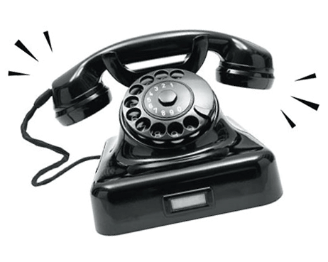
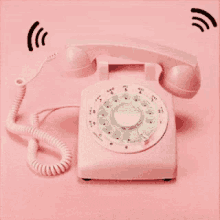

🏠 Back to menu
📐 2D Shapes Quiz
Q 1
Level 2
✅ 0
Kuromi

👆 tap to hear!
🎉 Amazing!
Tap the picture to hear something!
 👆 tap me!
👆 tap me!
💡 Let's look at this again
My Melody

👆 tap to hear!
📞 Charlie is calling! Tap the picture to answer.
🏆 You did it!
Great work learning about 2D shapes.
0 / 0
Final level: 2